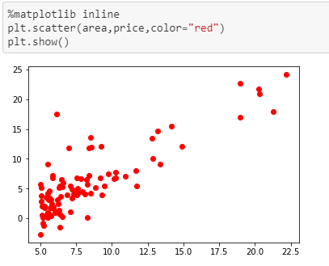
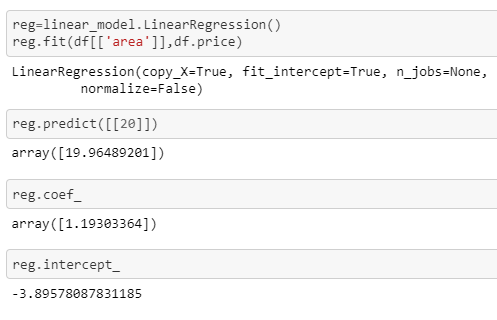

All right reserved @bhisma 2020
A statistical measure that attempts to determine the strength of the relationship between one dependent variable and one or more independent variables is called regression. Regression analysis is widely used for prediction and forecasting. For example, If we want to predict the price of the house based on its location, area, etc then it is a regression problem. Here, I talked about dependent and independent variables. Let us have a look at it! Independent variables are those which are input to a system and may take on different values freely. It is also called a predictor or explanatory variable and it is denoted by ‘X’. Dependent variables are those that change as a consequence of changes in other values in the system. It is also called a target or response variable and is denoted by ‘y’.
The Linear Regression is a method for predicting the value of a dependent variable ‘y’, based on the value of an independent variable ‘X’.There are two types of linear regression. They are:- Simple Linear Regression: Having only one independent variable, and Multiple Linear Regression: Having two or more than two independent variables. The equation of simple linear regression is:
y = b + a*X +e
here, y = dependent variable , X = independent variable , b =y-intercept , a = slope of line and e= error variable
The slope of a line is the change in y for a one-unit increase in X and y-intercept is the height at which the line crosses the vertical axis and is obtained by setting X=0 in equations.
Our goal is to choose values that minimize the Sum of Squared Error (SSE) of observed values.
Following is the code in python to look at simple linear regression
Here we import all the libraries, numpy is scientific computing tool, pandas is used for reading a text file and some data wrangling stuff, matplotlib is for data visualization and sklearn for computing LinearRegression.Here, we see that we load the dataset having the area and price of the house. The area is independent and the price is the dependent variable.
Here, we plot our data using matplotlib library. In the x-axis, there is an area and on the y-axis, there is a price variable. we can see from data that as the area of house increases, the price also increases. Thus there is some positive correlation between these two variables.
Now, we load our LinearRegression model from sklearn and we fit our training data to train our model. From the training, we see that the coefficient(i.e ‘a’ from our y=b+aX+e ) is 1.19303364 and y-intercept(i.e ‘b’ from our y=b+aX+e) is -3.8957… . Thus, using these parameters we predict the price of the house of a given area.
Finally, we predict the price of the house for a given area i.e 20. We plot the best fit line which is as shown in the above figure.
I hope you got a solid understanding of linear regression and how can we implement this using sklearn library.
All right reserved @bhisma 2020